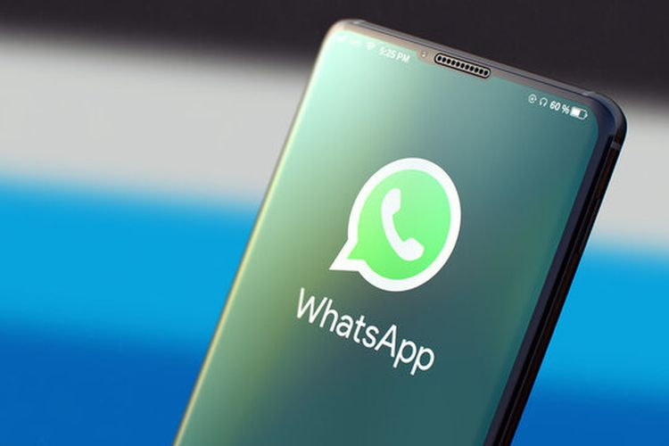

Cara Membuat Link WA dari Nomor Langsung untuk Bio Instagram

Link WhatsApp di bio Instagram biasanya digunakan oleh pemilik akun bisnis untuk memudahkan audiens menjangkau kontak mereka dengan cepat.
Dengan menambahkan tautan langsung menuju WhatsApp, para pemilik usaha, freelancer, maupun kreator konten bisa memberikan akses yang lebih cepat bagi calon pelanggan atau pengikut yang ingin menghubungi mereka.
Hal ini sangat membantu meningkatkan interaksi dan komunikasi secara langsung tanpa perlu melewati langkah yang rumit seperti menyimpan nomor terlebih dahulu.
Cara membuat link WhatsApp dari nomor langsung untuk bio Instagram sangatlah mudah dan praktis. Pengguna bisa membuat link WA dari nomor mereka secara langsung dan cepat dengan tautan tertentu.
Lantas bagaimana cara membuat link WA dari nomor langsung yang bisa diletakkan di bio Instagram? Selengkapnya berikut ini tutorialnya.
Cara membuat link WA
- Mulai dengan format dasar link WhatsApp: https://wa.me/
- Tambahkan nomor telepon Anda setelah https://wa.me/ tanpa menggunakan tanda plus (+), spasi, atau simbol lainnya
- Pastikan nomor telepon Anda dimulai dengan kode negara
- Nomor yang digunakan harus dalam format numerik murni tanpa karakter khusus seperti tanda kurung, tanda hubung, atau spasi
- Jika nomor WhatsApp Anda adalah +6283534XXXX, maka link yang benar akan terlihat seperti ini: https://wa.me/6283534XXXX,
Cara Menyematkan Link wa di Instagram
- Buka profile Instagram anda
- Pilih "Edit profile"
- Pilih "Tautan"
- Klik "Tambahkan tautan eksternal
- Selanjutnya Tambahkan link WhatsApp yang di buat sebelumnya
- Jika nomor WhatsApp Anda adalah +6283534XXXX, maka link yang benar akan terlihat seperti ini: https://wa.me/6283534XXXX
- Pengikut akun Anda bisa langsung mengklik tautan WA tersebut
itulah cara Menyematkan link WhatsApp dan Menyematkannya di bio Instagram. Semoga membantu